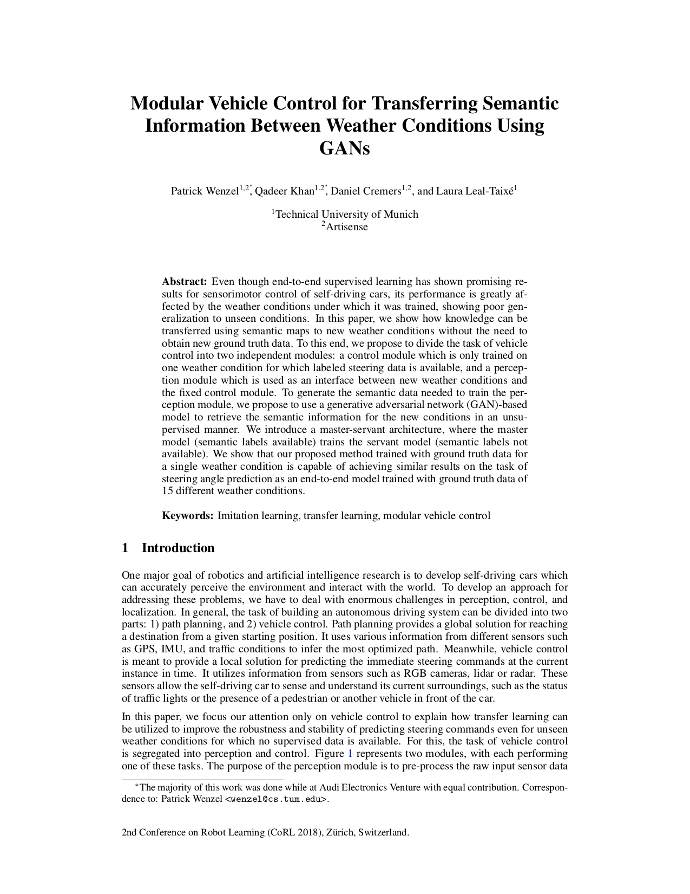

|
|
|
|
|
|

|
Citation |
|
@inproceedings{wenzelCoRL18carla,
author = {Wenzel, Patrick and
Khan, Qadeer and Cremers, Daniel and
Leal-Taixé, Laura},
title = {Modular Vehicle Control for Transferring
Semantic Information Between Weather Conditions Using GANs},
booktitle = {Conference on Robot Learning (CoRL)},
year = {2018}
}
|